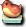

官方公告
活動怪物
櫻花河童
幽靈木偶
夜叉狐
演舞傀儡
暗天狗面具
暗黑武士
萬年夜叉
億年夜叉
掉落備忘
留言
官方公告
【活動概要】
由於櫻花村被發現，
不可思議的力量籠罩了整個麥索西亞。
或許是受其影響，最近怪物的動向很奇怪。
風聲傳說怪物們正在策劃襲擊城鎮……。
活動怪物
櫻花河童
| 櫻花河童 | Lv | AC | MC | AAR | SAR | 掉落物品 |
| HP:950 | 35 | 69 | 50 | 0 | 0 | 玉子壽司 |
| 經驗值 | 名聲值 | 金錢 | 攻擊屬性 | 防禦屬性 | ||
| - | - | - | - | - | ||
| STR | DEX | INT | WIS | CON | ||
| 22 | 21 | 21 | 21 | 21 |
備註：死亡時，高機率召喚幽靈木偶
幽靈木偶
| 幽靈木偶 | Lv | AC | MC | AAR | SAR | 掉落物品 |
| HP:1,980 | 36 | 67 | 50 | 2 | 2 | 玉子壽司 |
| 經驗值 | 名聲值 | 金錢 | 攻擊屬性 | 防禦屬性 | ||
| - | - | - | - | - | ||
| STR | DEX | INT | WIS | CON | ||
| 11 | 33 | 21 | 21 | 21 |
備註：死亡時，高機率召喚夜叉狐
夜叉狐
| 夜叉狐 | Lv | AC | MC | AAR | SAR | 掉落物品 |
| HP:6,600 | 38 | 69 | 50 | 0 | 0 | |
| 經驗值 | 名聲值 | 金錢 | 攻擊屬性 | 防禦屬性 | ||
| - | - | - | - | - | ||
| STR | DEX | INT | WIS | CON | ||
| 31 | 21 | 21 | 21 | 21 |
備註：死亡時，高機率召喚演舞傀儡
演舞傀儡
| 演舞傀儡 | Lv | AC | MC | AAR | SAR | 掉落物品 |
| HP:14,040 | 70 | 25 | 25 | 10 | 10 | |
| 經驗值 | 名聲值 | 金錢 | 攻擊屬性 | 防禦屬性 | ||
| - | - | - | - | - | ||
| STR | DEX | INT | WIS | CON | ||
| 71 | 21 | 21 | 21 | 21 |
備註：死亡時，高機率召喚暗天狗面具
暗天狗面具
| 暗天狗面具 | Lv | AC | MC | AAR | SAR | 掉落物品 |
| HP:800,000 | 70 | -85 | -60 | 50 | 45 | 斗笠 |
| 經驗值 | 名聲值 | 金錢 | 攻擊屬性 | 防禦屬性 | ||
| - | - | - | 無 | 無 | ||
| STR | DEX | INT | WIS | CON | ||
| 130 | 100 | 90 | 150 | 150 |
備註：死亡時，極低機率召喚暗黑武士
暗黑武士
| 暗黑武士 | Lv | AC | MC | AAR | SAR | 掉落物品 |
| HP:150,000 | 115 | -90 | -50 | 60 | 10 |  麻雀饅頭 |
| 經驗值 | 名聲值 | 金錢 | 攻擊屬性 | 防禦屬性 | ||
| - | - | - | - | - | ||
| STR | DEX | INT | WIS | CON | ||
| - | - | - | - | - |
備註：死亡時，極低機率召喚萬年夜叉
萬年夜叉
| 萬年夜叉 | Lv | AC | MC | AAR | SAR | 掉落物品 |
| HP:1000000 | 120 | -100 | -100 | - | - | |
| 經驗值 | 名聲值 | 金錢 | 攻擊屬性 | 防禦屬性 | ||
| - | - | - | - | - | ||
| STR | DEX | INT | WIS | CON | ||
| - | - | - | - | - |
備註：死亡時，極低機率召喚億年夜叉
億年夜叉
| 億年夜叉 | Lv | AC | MC | AAR | SAR | 掉落物品 |
| HP:20,000,000 | 120 | -100 | -100 | - | - | |
| 經驗值 | 名聲值 | 金錢 | 攻擊屬性 | 防禦屬性 | ||
| - | - | - | - | - | ||
| STR | DEX | INT | WIS | CON | ||
| - | - | - | - | - |
備註：
掉落備忘
留言
沒有留言。留言/活動「怪物襲擊」?
&#